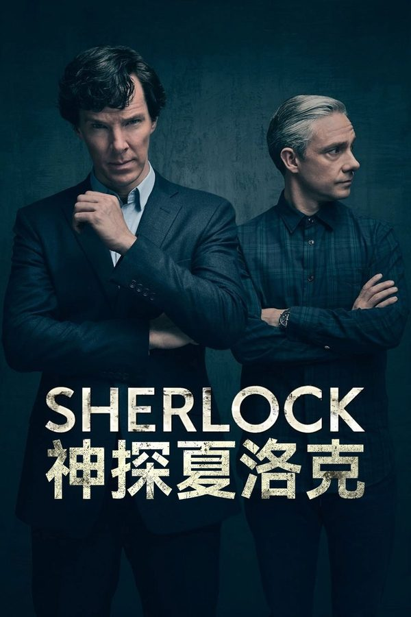
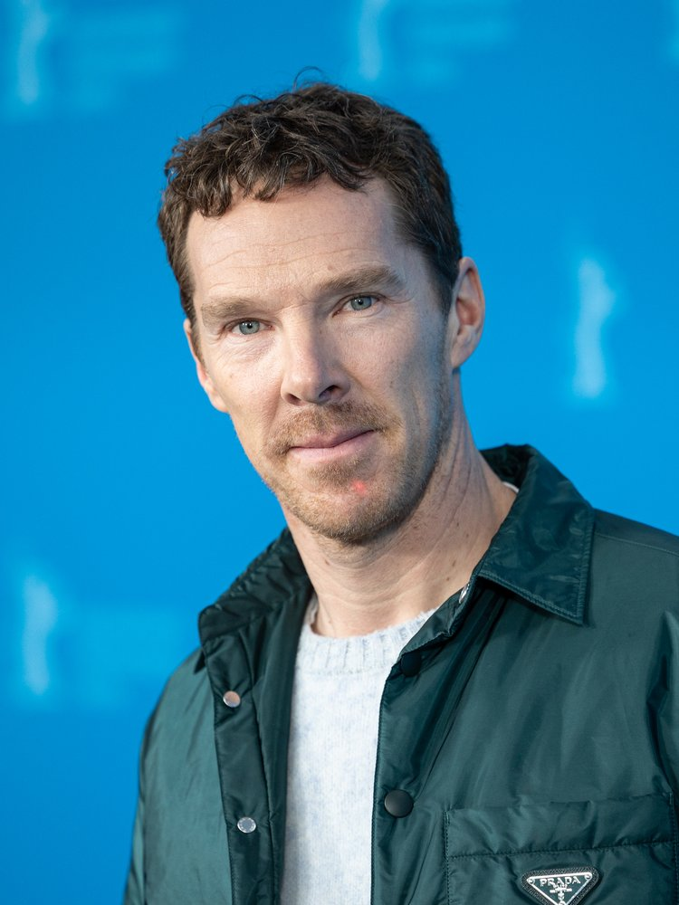
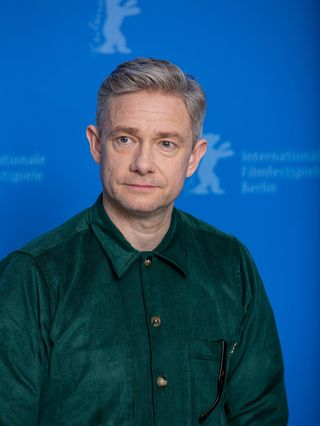
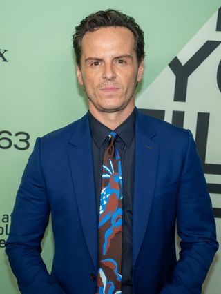
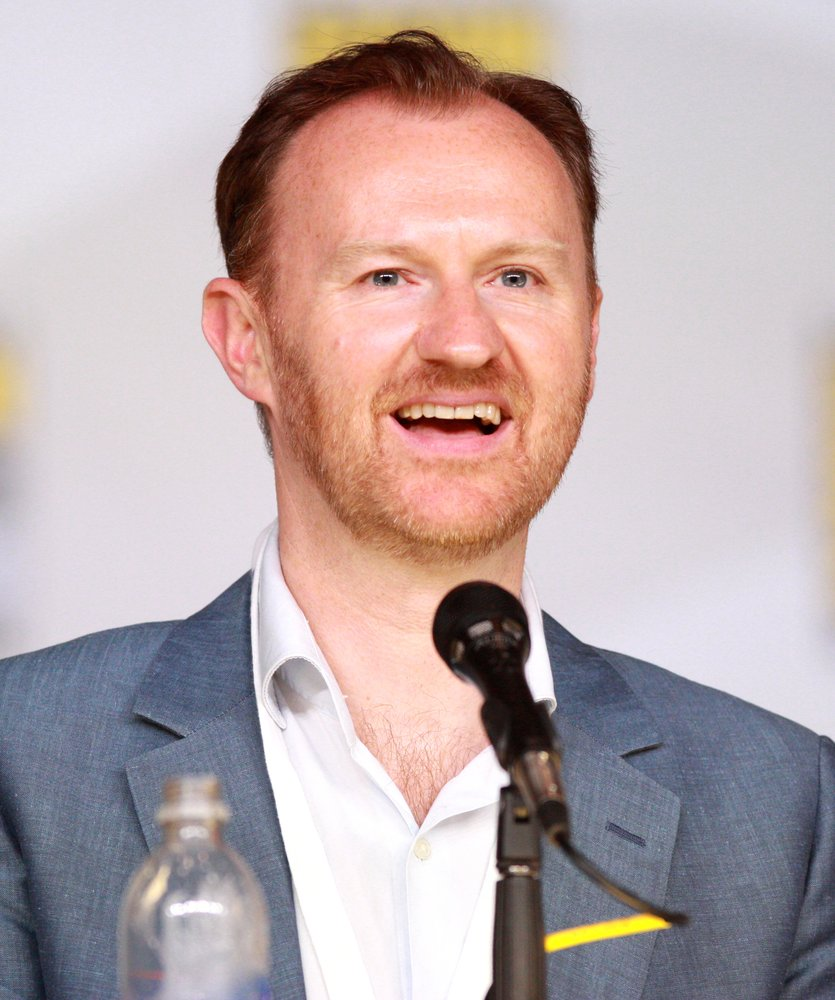
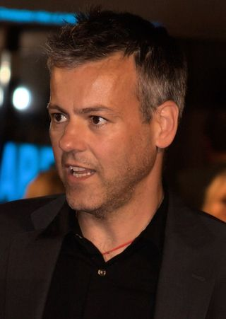
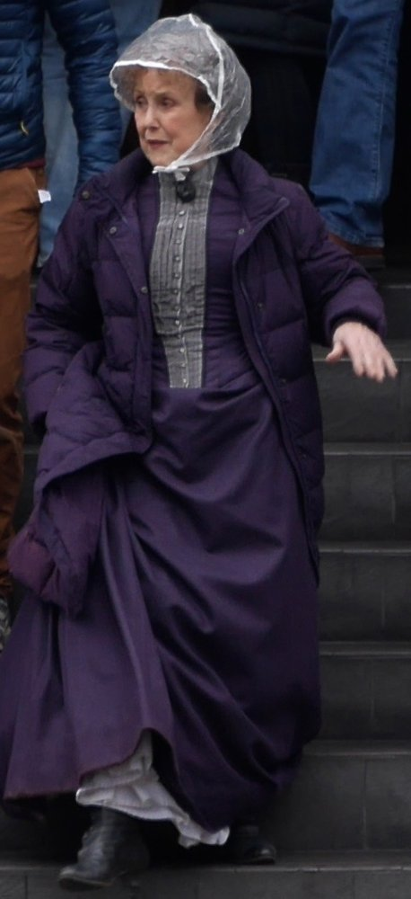

TV SERIES / 影视剧集
SHERLOCK
神探夏洛克 · 21 世纪的贝克街
把柯南·道尔笔下的维多利亚侦探，原封不动地搬进智能手机与伦敦雾霾里的 21 世纪。天才与军医，博客与短信，MISS ME? —— 一场烧脑、性冷淡又滚烫的现代冒险。

TV SERIES / 影视剧集
神探夏洛克 · 21 世纪的贝克街
把柯南·道尔笔下的维多利亚侦探，原封不动地搬进智能手机与伦敦雾霾里的 21 世纪。天才与军医，博客与短信，MISS ME? —— 一场烧脑、性冷淡又滚烫的现代冒险。
21 世纪的伦敦，咨询侦探 Sherlock Holmes 与退役军医 John Watson 在 221B Baker Street 合住，以博客记录、以推理破案。他们对抗的，是同样聪明的犯罪天才 Jim Moriarty——这场猫鼠游戏贯穿全剧，最终在莱辛巴赫瀑布上演生死对决。
每集都把一个 Doyle 经典故事翻新：从「粉色的研究」到「巴斯克维尔的猎犬」，从「了不起的复姓」到「最后的誓言」。编剧把短信、GPS、社交媒体变成新的叙事语言，让百年前的侦探在智能手机时代依然锋利。
I'm not a psychopath, I'm a high-functioning sociopath. With your number.
— Sherlock Holmes（本尼迪克特·康伯巴奇），对 Watson 的自我剖白，定义了这一版夏洛克的灵魂。
以下为真实演员对应照片与角色简介（主要卡司）。

Benedict Cumberbatch
高功能反社会人格的天才咨询侦探，冷静毒舌，依赖推理与观察，却极度依赖 Watson。

Martin Freeman
退役军医，Sherlock 的搭档与现实锚点，用博客记录案件，是全剧的情感温度。

Andrew Scott
与 Sherlock 棋逢对手的犯罪天才，「唯一能让他无聊消失的人」，全剧最大反派。

Mark Gatiss
Sherlock 的哥哥，英国政府高官，表面冷淡实则暗中守护弟弟，亦为本剧主创之一。

Rupert Graves
苏格兰场探长，常与 Sherlock 合作破案，是从不嫌弃天才的务实警察。

Una Stubbs
221B 的房东太太，把 Sherlock 当儿子般的家人，常制造温情笑料。
| 季 / 篇 | 首播年 | 集数 | 一句话主题 |
|---|---|---|---|
| 第 1 季 | 2010 | 3 | 开篇三案，莫里亚蒂正式登场 |
| 第 2 季 | 2012 | 3 | 福尔摩斯 vs 莫里亚蒂，莱辛巴赫坠落 |
| 第 3 季 | 2014 | 3 | 假死归来、婚礼与马格努森事件 |
| 特别篇《可恶的新娘》 | 2016 | 1 | 回归维多利亚时代，镜像追问「莫里亚蒂是否真死」 |
| 第 4 季 | 2017 | 3 | 最终对决、Mary 之死与兄弟重归于好 |
Moffat 与 Gatiss 构想并试拍，把道尔原著现代化。
第 1 季首播，平均收视超 700 万，口碑爆发。
第 2 季播出，入围第 64 届艾美奖 13 项提名。
第 3 季播出，成为售往最多电视台的 BBC 剧集（超越《神秘博士》）。
维多利亚时代特别篇《可恶的新娘》，入围艾美奖最佳电视电影。
第 4 季首播，首集 810 万观众成为元旦收视冠军。